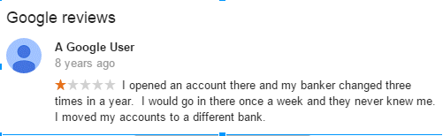

This is a general preface to a series I have been brainstorming for quite some time. I am currently working on setting up a web server to perform several attacks on as well as a database to store fictitious data. This section will cover the social engineering aspects of what it takes to break the bank.
We have many attacks vectors to choose from when targeting any network, but time and time again we discover that the most common entry into these once secure fortresses are the employees or users themselves.
The issues with humans
Being impervious to perfection, humans are always going to make mistakes. They are easily manipulated, persuaded, and tricked. All it takes is one good social engineer to cripple an entire infrastructure.
Before we can actually persuade anyone that we know what we are talking about, we have to do some digging on our target.

Wow, they don’t even know their own customers? How are they going to be able to tell the difference between a criminal and a genuine person then? (Disclaimer: While this comment is from 8 years ago, it is not likely that practices have changed. Additional recon may be required.)
The following steps I would take to gain further intel are as follows:
- Look through the recent reviews to find a name of a current customer.
- Call the bank and listen attentively for when the clerk gives their name. In this case, it is ‘Jake’.
- Explain that you recently lost the password to your email and that you would like to confirm it.
- Jake asks you for some info and you tell him that you will call right back.
- Wait until lunch break. (Additional recon time!)
- Call back and if you have a different clerk, tell them that Jake was supposed to reset your email password.
- Convince the clerk to send a password reset email to your ‘new’ email.
This short exercise assumes that the clerks are the ones who are able to reset your password. If not, then just replace clerk with whatever title the person at the call center has. It’s pretty flawed and basic, but you get the general premise.
Why is Social Engineering still prevalent? We can trick banks into thinking we are legit customers through either spoofing or SE’ing, which in turn can cost them.I’ll probably come back later and expand upon my original scenario by showing practical examples of successful spear phishing attacks.
For now I’ll be working on setting up a local web server to simulate what one can actually do inside of a bank customers panel.

 .
.